VMWare and Azure Cloud¶
Extraction of Evidence from On-Premise / IaaS Virtual Machines¶
One of the situations we may face as future forensic professionals is dealing with virtual machines, either in local installations (our own or a client’s) or in third-party infrastructures.
In local installations, we have more possibilities for forensic acquisition. We can operate from inside the virtual machine itself or directly from the hypervisor. The first scenario is very similar to the forensic procedures already studied in class: we can use DumpIt or similar tools to perform a memory dump, execute scripts to collect forensic artifacts, and also clone the hard drive or obtain a logical image.
The second scenario is the one covered in Part A of this practice.
Part B focuses on extracting forensic evidence when the virtual machines are hosted by third-party providers, such as Azure Cloud. In this case, memory dumps can be obtained using the same methods previously studied in class. Additionally, scripts may be executed to collect relevant forensic artifacts for later analysis. Virtual hard drives can also be downloaded or cloned directly in the cloud for analysis from another virtual machine.
Objectives¶
Become aware of the forensic acquisition possibilities offered by cloud environments and virtualized systems.
Extract forensic evidence from some of the most widely used cloud systems.
Materials¶
Any Windows distribution virtualized on your system.
Azure Cloud.
Libcloudforensics.
PART A: Extraction of On-Premise Evidence¶
In this practical exercise we will learn how to perform a forensic analysis of a system virtualized with VMware
List all the running machines
vmrun list

Take a snapshot of the machine
It can be done through the Vmware GUI:

Or using a CLI command:
vmrun snapshot "/home/adrian/desktop/vmware/DC-1/DC-1.vmx" "Snapshot 3"
As shown, the snapshot is stored correctly. Move it to Kali in order to analyze it correctly.

Analyze the memory dump
Once the dump is taken, we can analyze it using volatily as shown below
vol3 -f DC-1-Snapshot3.vmem -s ~/desktop/tools/volatility3/volatility3/symbols/ banners.Banner

PART B: Extraction of Evidence from Azure Cloud¶
Sign in Azure CLoud and click on “Virtual machines”

Clik con “Create” and select “Virtual machine”
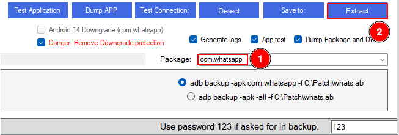
There, create a machine of your preferences

Once finished, a menu like the image below should appear.

Connect to the deployed machine via ssh
ssh -i <private-key> azureuser@9.223.178.153
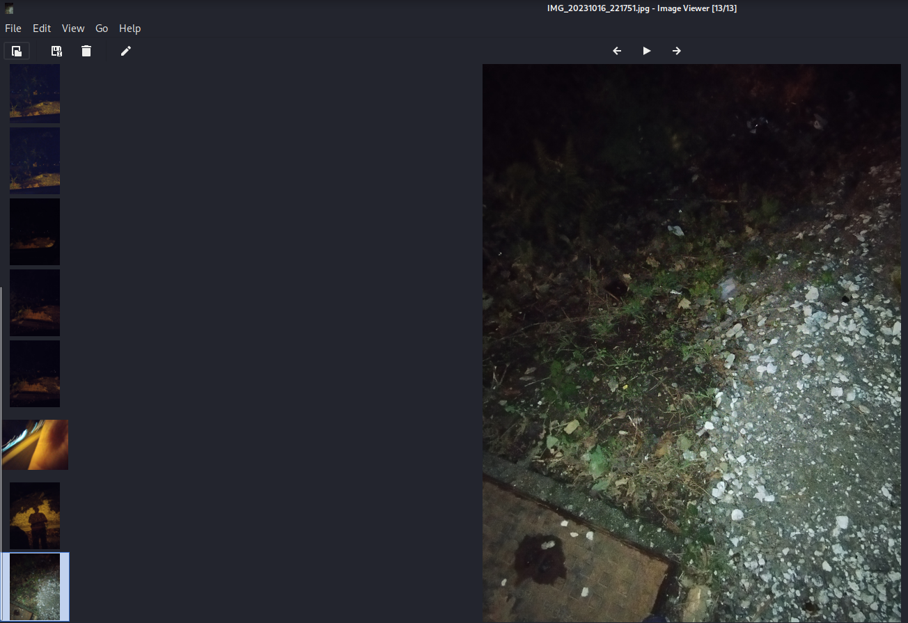
Download avml and make a memory dump
wget https://github.com/microsoft/avml/releases/latest/download/avml
chmod +x avml
sudo ./avml memdump.raw
sudo chown azureuser:azureuser memdump.raw
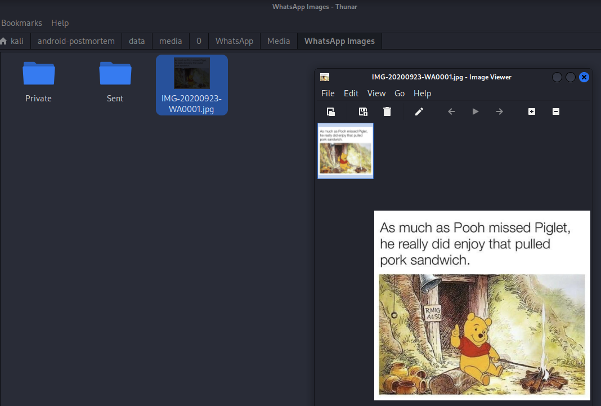
Copyy the memory dump into your local machine
scp -i azure-forensics-key.pem azureuser@9.223.178.153:~/memdump.raw .
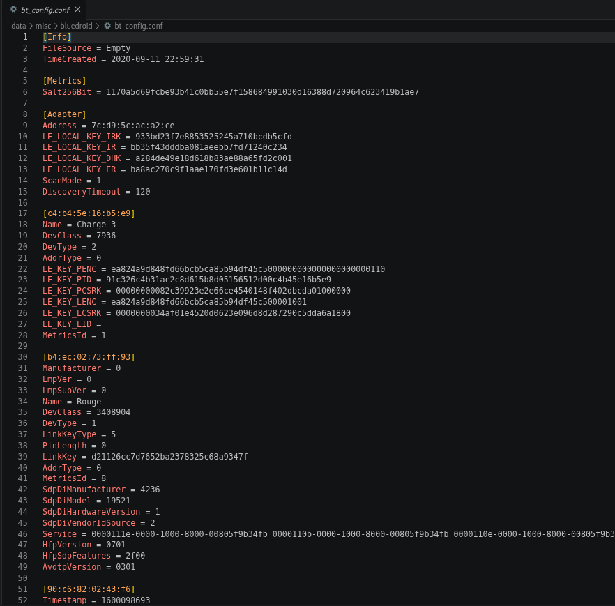
Analyze the memory dump using volatility.
vol3 -f memdump.raw -s ~/desktop/tools/volatility3/volatility3/symbols/ banners.Banner

In order to make the disk clone in Azure, click over the disk name
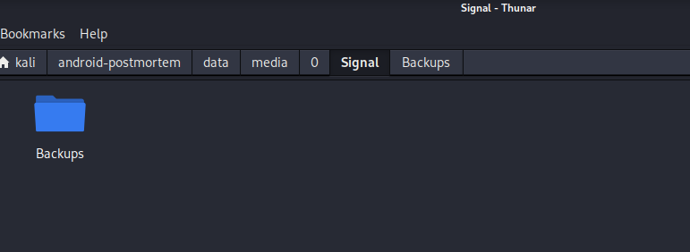
Then click on “Create snapshot”.
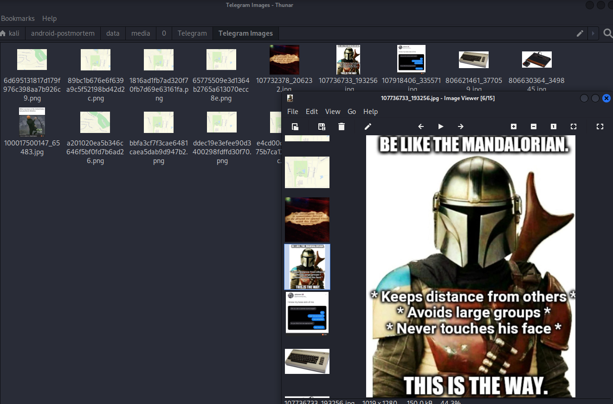
Type a name for the snapshot and click on “Review + create”.

Verify that the validation is passed and click on “Create”
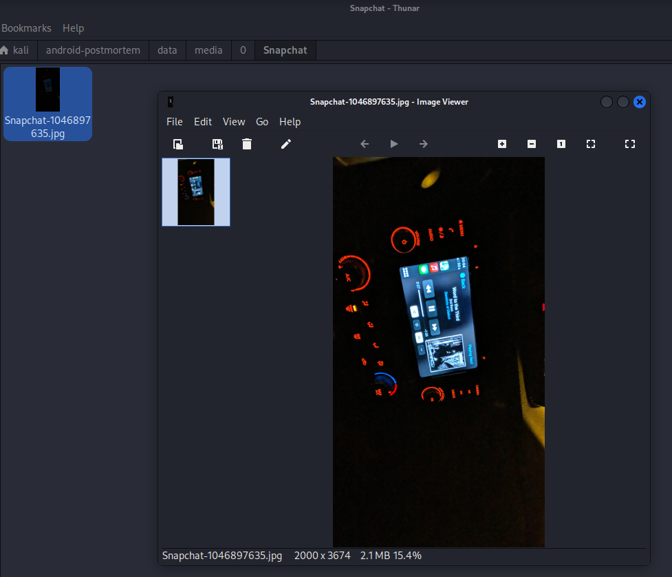
Lastly, verigy that th edeplyment is completed and the snapshot is done.
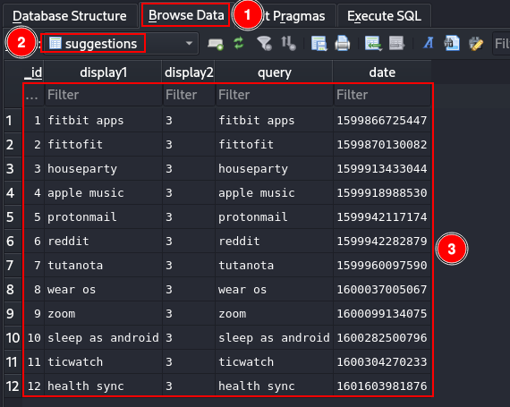
In order to use Azure Cli, run the following docker container and execute the login command.
docker run -it mcr.microsoft.com/azure-cli
az login
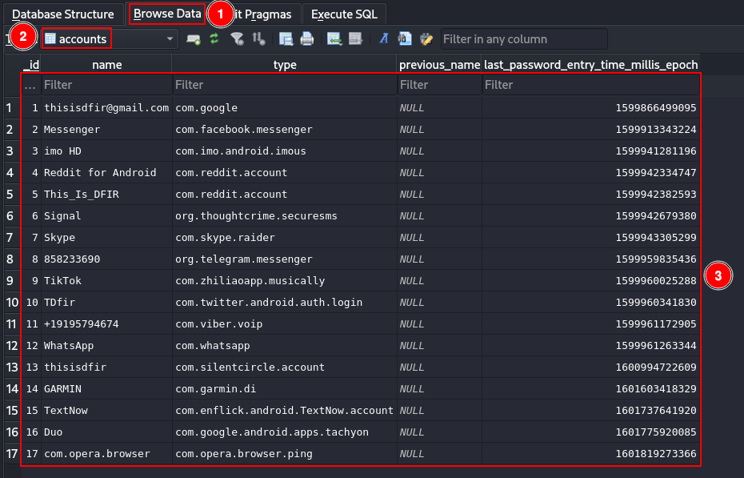
Pasete en the browser the code displayed in the command line
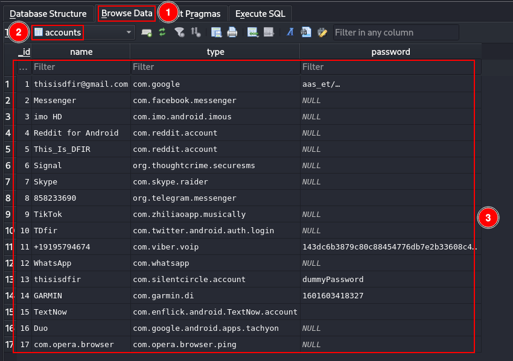
Write yout azure account mail and click on “Next”
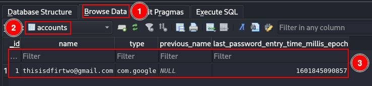
Once signed, you can close the window
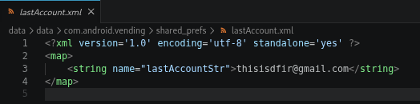
A command line will appear in the terminal
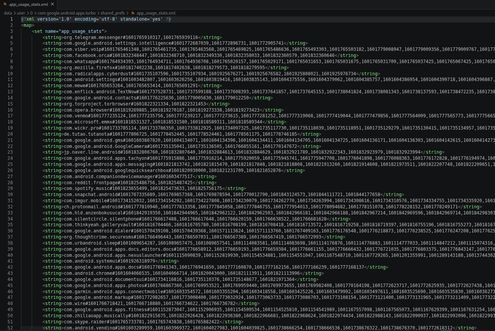
Using the following command, a temporal URL can be created with access to te snapshot that we have generated previously.
az snapshot grant-access \
--resource-group forensics \
--name snapshot-1 \
--duration-in-seconds 3600

Copy the URL, which in this case is:
{
"accessSAS": "https://md-d3hcbtldht5q.z31.blob.storage.azure.net/mmjzwc4ms50k/abcd?snapshot=2026-05-16T20%3A11%3A11.0777366Z&sv=2018-11-09&sr=bs&si=ac513c6f073b4bf0ae1dbe1708e749d33e75b39012e740e1832fe1c1e332dd67&sig=1GPN32p0qzTJJLwQx46zwOh%2FLxw8Jrez2BDSWQVTffM%3D"
}
And paste it in your browser, the download should start automatically.

In order to create a disk clone of the VM retrieve some important data with the following commands:
az account show
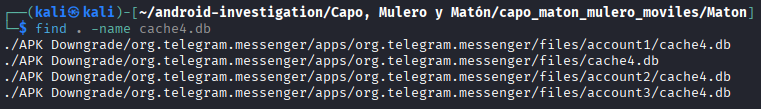
az ad sp create-for-rbac --name "forensics-sp"

az role assignment create \
--assignee <appId> \
--role "Contributor" \
--scope /subscriptions/<id>
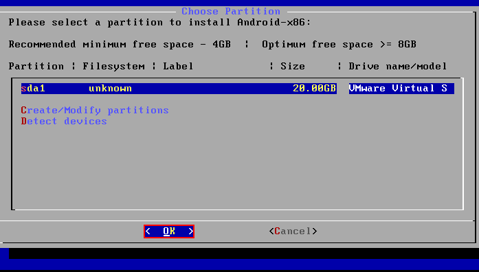
Once all the information is retrieved, activate a python venv and install libcloudforensics
python3 -m venv venv
source venv/bin/activate
pip install libcloudforensics
Export some the previously retrieved data
export AZURE_SUBSCRIPTION_ID="<subscription-id>"
export AZURE_TENANT_ID="<tenant-id>"
export AZURE_CLIENT_ID="<app-id>"
export AZURE_CLIENT_SECRET="<client-secret>"

And create a python script with the following content

Execute it and the clone will be generated inmmediately.
python3 forensics.py